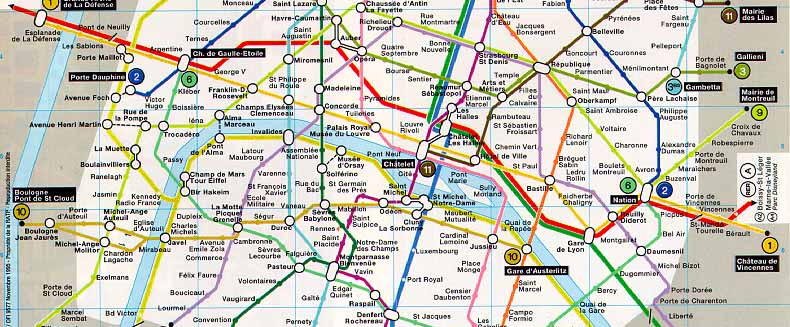

Votre but est de réaliser un logiciel permettant de calculer de manière efficace un plus court trajet d'une station à une autre dans le métro parisien. Les données (graphe du métro, positions des stations, temps des trajets élémentaires) vous seront fournies.
Pour améliorer de manière significative les performances, vous mettrez en œuvre une technique d'optimisation utilisée pour la résolution de problèmes en intelligence artificielle : les algorithmes A*.
michel.couprie@esiee.fr
Avant tout, récupérez le fichier Graphes.tgz et décompressez-le :
tar zxvf Graphes.tgz
rm Graphes.tgz
cd Graphes; ls
Cette archive contient des programmes C pour manipuler des graphes, la
documentation de ces programmes se trouve ici :
Dans un fichier ordinaire, saisissez les données d'un graphe quelconque, sous la forme suivante :
<nombre_sommets> <nombre_arcs> arcs <sommet_initial> <sommet_final> <sommet_initial> <sommet_final> ...
Par exemple (voir le fichier k5.graph) :
5 10 arcs 0 1 0 2 0 3 0 4 1 2 1 3 1 4 2 3 2 4 3 4
Editez les fichiers exo111.c, exo112.c et lisez-les. Compilez la bibliothèque :
makepuis compilez ces deux programmes :
make exo111.exe make exo112.exeet exécutez-les :
./exo111.exe k5.graph ./exo112.exe k5.graphCe dernier programme crée un fichier Postscript dont le nom reprend celui du fichier graphe donné (par exemple ici : k5.graph.eps). Vous pourrez visualiser ce fichier PostScript généré grâce à ghostview, kghostview ou display :
display k5.graph.eps
Avant de passer à la suite, étudiez la description des structures de données utilisée pour représenter un graphe sous la forme Γ (application successeurs). Pensez également à vous référer à la documentation du code source, en particulier :
Cette fonctionnalité nous sera utile dans la suite.
Editez le fichier exo121.c, lisez-le, compilez et exécutez. Analyser la fonction Sym. Pourquoi n'est-elle pas efficace ? Quelle est la complexité de calcul de l'algorithme ?
Editez le fichier exo122.c, lisez-le, compilez et exécutez. Notez les temps de calculs obtenus pour diverses tailles de graphes.
Dans le fichier exo122.c, modifiez la fonction Sym pour rendre l'algorithme linéaire. Voici comment parcourir une liste de successeurs :
pcell p;
...
/* pour tout sommet j successeur de i */
for (p = g->gamma[i]; p != NULL; p = p->next)
{
j = p->som;
...
Refaire les mesures de temps de calcul avec la nouvelle version, et comparer.
Implémentez l'algorithme de Dijkstra étudié en cours. Voici une courte description de la fonction demandée :
/* ====================================================================== */
/*! \fn void Dijkstra(graphe * g, int i)
\param g (entrée) : un graphe valué (réseau). La longueur de chaque arc doit
se trouver dans le champ v_arc de la structure cell .
\param i (entrée) : un sommet de g.
\brief calcule, pour chaque sommet x de g, la longueur d'un plus court
chemin de i vers x. Cette longueur est stockée dans le champ
v_sommets de g .
*/
/* ====================================================================== */
Testez votre programme sur un graphe de taille réduite de votre choix (celui-ci par exemple).
Fonctions et données utiles :
Implémentez un algorithme de recherche de plus court chemin d'un sommet d vers un sommet a, qui se base sur les valeurs calculées par Dijkstra. Voici une courte description de la fonction demandée :
/* ====================================================================== */
/*! \fn graphe * PCC(graphe * g, int d, int a)
\param g (entrée) : un graphe valué (réseau). La longueur de chaque arc doit
se trouver dans le champ v_arc de la structure cell .
\param d (entrée) : un sommet (départ).
\param a (entrée) : un sommet (arrivée).
\return un plus court chemin de d vers a dans g , représenté par un graphe.
\brief retourne un plus court chemin de d vers a dans g .
*/
/* ====================================================================== */
On pourra améliorer le temps de calcul en stoppant l'algorithme de Dijkstra dès que le sommet a est atteint.
Testez votre programme sur un graphe de taille réduite de votre choix.
Fonctions et données utiles :
Vous trouverez dans le fichier metro_complet.graph un graphe valué construit de la façon suivante :
make graphe2ps.exe
graphe2ps.exe metro_complet.graph
display metro_complet.graph.eps
Testez votre algorithme de recherche d'un plus court chemin sur le
graphe du métro. Visualisez
(voir EPSGraphe)
le plus court chemin obtenu ainsi que l'ensemble des sommets explorés par l'algorithme de Dijkstra,
pour quelques exemples de trajets dans le métro.
La technique A* est résumée dans le document ci-dessous :
Résolution de problèmes en intelligence artificielle et
optimisation combinatoire : les algorithmes A*
Sa grande force est de garantir l'optimalité de la solution trouvée
tout en parcourant seulement une partie, et parfois une très petite
partie, du graphe de recherche qui peut être immense. Je vous
encourage vivement à lire le chapitre 2 du livre de N. Nilsson :
"Principes d'Intelligence artificielle" (disponible à la
bibliothèque), qui contient une description beaucoup plus détaillée de
A*, avec en particulier la démonstration de cette propriété
remarquable.
Pour bien comprendre l'algorithme, il faut l'exécuter "à la main" sur
plusieurs exemples de problèmes et d'heuristiques. Vous trouverez dans
la présentation suivante un exemple d'exécution pour la résolution
d'un problème de jeu de taquin.
Présentation powerpoint
La plus grande difficulté dans l'utilisation de la technique A* est
de trouver de bonnes heuristiques
qui satisfont à la condition garantissant l'optimalité de la solution.
Pour vous y entraîner, voici quelques
problèmes choisis, pour lesquelles il existe des heuristiques
simples et performantes.
Problèmes 1 et 2
Problème 3
Il suffit maintenant de modifier légèrement l'algorithme de Dijkstra pour implémenter la stratégie A* retenue pour notre problème (qui correspond au problème 2 ci-dessus).
Réalisez cette implémentation, et visualisez (voir EPSGraphe) l'ensemble des sommets explorés pour quelques exemples de trajets. Comparez le nombre de ces sommets avec le nombre de sommets explorés par Dijkstra.
L'opération qui coûte le plus globalement, dans l'algorithme de Dijkstra avec ou sans heuristique A*, est la recherche de l'élément minimal dans une liste de sommets valués qui est maintenue à jour, avec des opérations d'ajout, de retrait, et de modification des valeurs.
Pour une liste contenant à un moment donné N sommets, l'algorithme naïf pour trouver l'élément minimal est en O(N).
Il est possible, grâce à une structure de données adaptée, de réduire ce coût à une constante, tout en garantissant un coût en O(log N) pour les autres opérations. Plusieurs solutions sont possibles : tas binaires, tas binomiaux, tas de Fibonacci...
Les tas binaires représentent un bon compromis entre l'efficacité algorithmique et la facilité de compréhension et d'implémentation. Vous trouvez sur cette page Wikipedia une description du principe de la structure de tas binaire.
Vous implémenterez un tas binaire, que vous testerez seul dans un premier temps, et que vous intégrez à votre logiciel ensuite.
Réalisez quelques mesures (voir 1.2.2) pour mettre en évidence le gain en temps de calcul.
Remerciements
Nous tenons à remercier la RATP pour les données mises à disposition sur son site Web, ainsi que L. Granboulan et L. Mauborgne de l'ENS, auteurs d'un TP sur la recherche de plus courts chemins dans le métro dont nous nous sommes inspirés pour partie.
{kind=link}